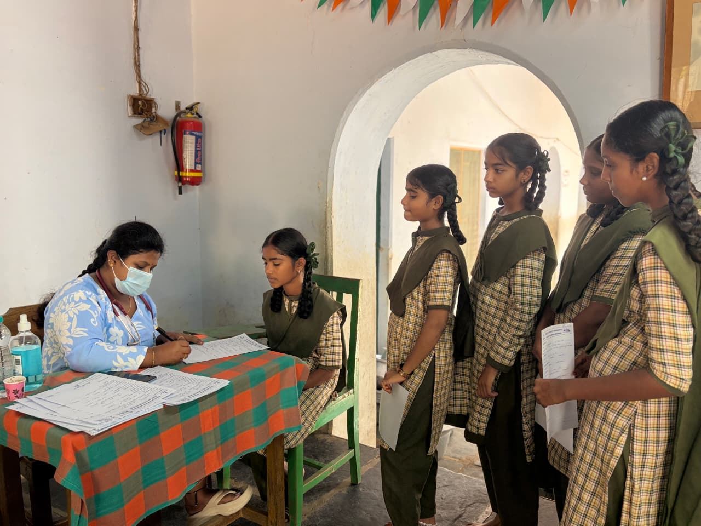
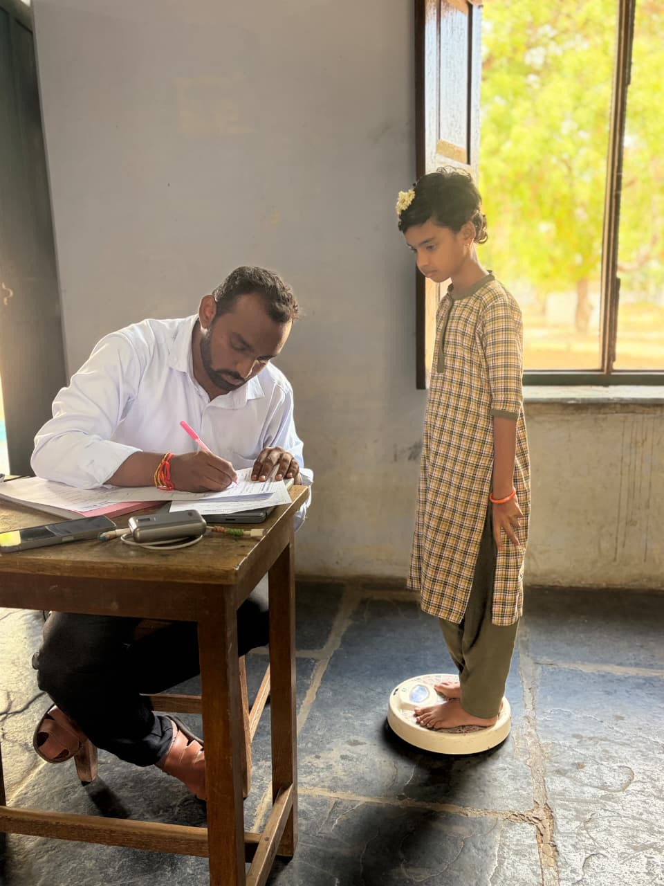
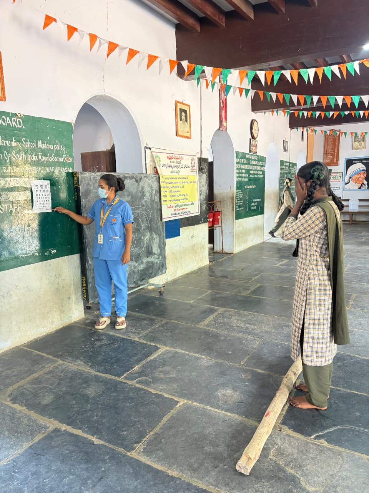
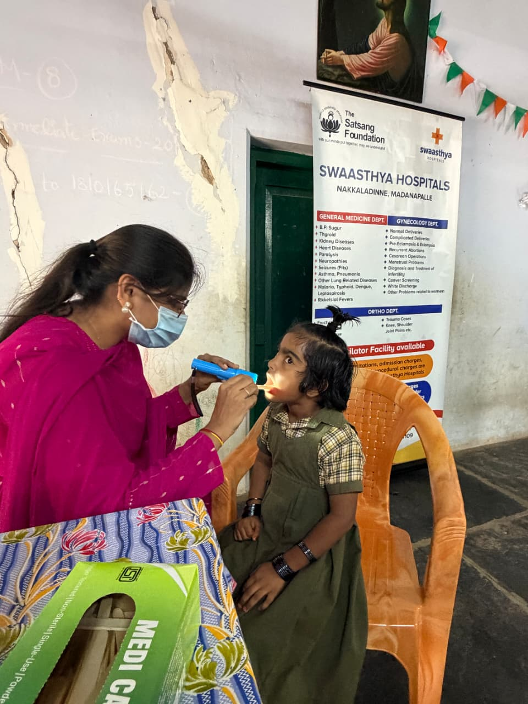

Camp screening snapshot
Every figure below is calculated from the aggregated, de-identified screening dataset.
Demographics
Gender and age spread of the students screened across both schools.
Gender Distribution
Share of students screened, by gender
Age Distribution
Students grouped into camp-relevant age bands

BMI screening
Body Mass Index status, calculated from measured height and weight at the camp.

BMI Status
Proportion of students in each BMI category
BMI Distribution
Number of students by BMI range
Vision and dental screening
Distance-vision (Snellen) results and the most common dental examination findings.

Vision Screening Results
Distance vision (Snellen). “Normal” counts only students who were tested; students with no reading are shown as “Not Tested”.
Most Common Dental Findings
Number of students with each recorded dental finding (findings seen in fewer than 5 students are not shown)

Nutrition & illness patterns
General health observations and the most frequently recorded acute or chronic conditions.
Nutritional & General Health
Students with a recorded nutrition-related observation
Recent Illness Patterns
Most frequently recorded conditions (grouped to protect privacy where counts are small)
🔍 What the screening data shows
Findings are calculated directly from the dataset. Wording describes what screening identified — not a medical diagnosis.
⚕️ Areas requiring attention
Screening findings ranked by how many students they affected — for planning follow-up, not as a diagnosis.
Camp activities
Moments from the screening camp at both schools.
Filter & browse indicators
Filters update the KPI cards and the gender, age and BMI charts from pre-computed group totals — no individual record exists in the published data, and any group of fewer than 5 students is hidden.
| Health Indicator | Students | Percentage | Status |
|---|